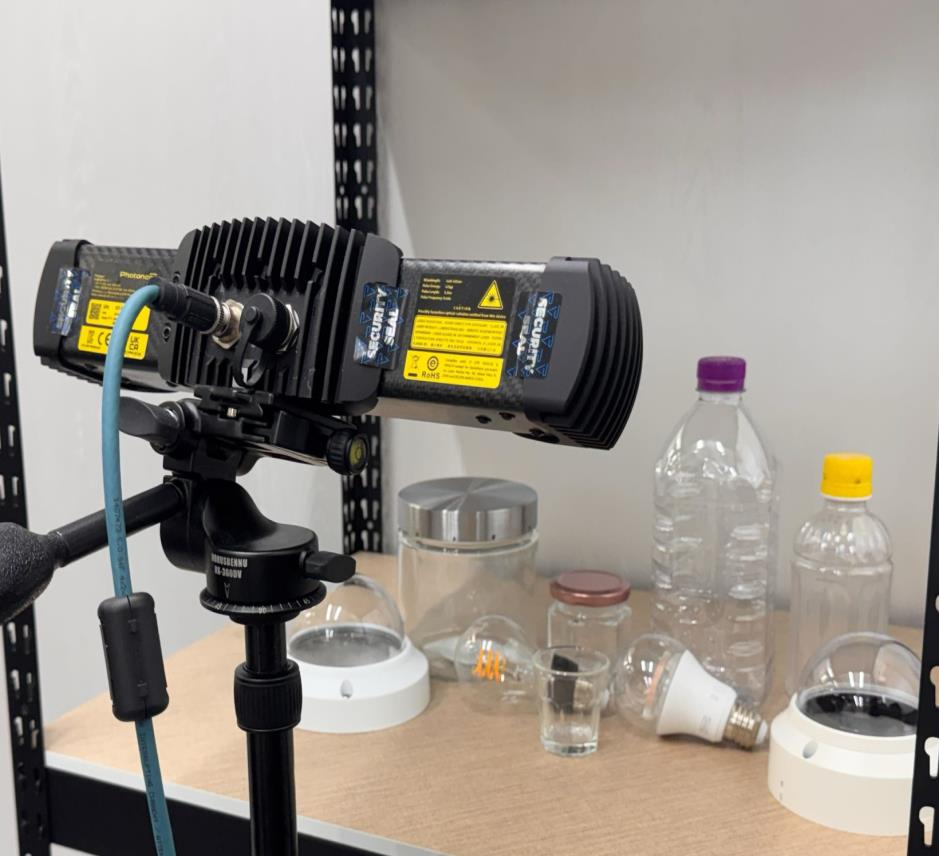
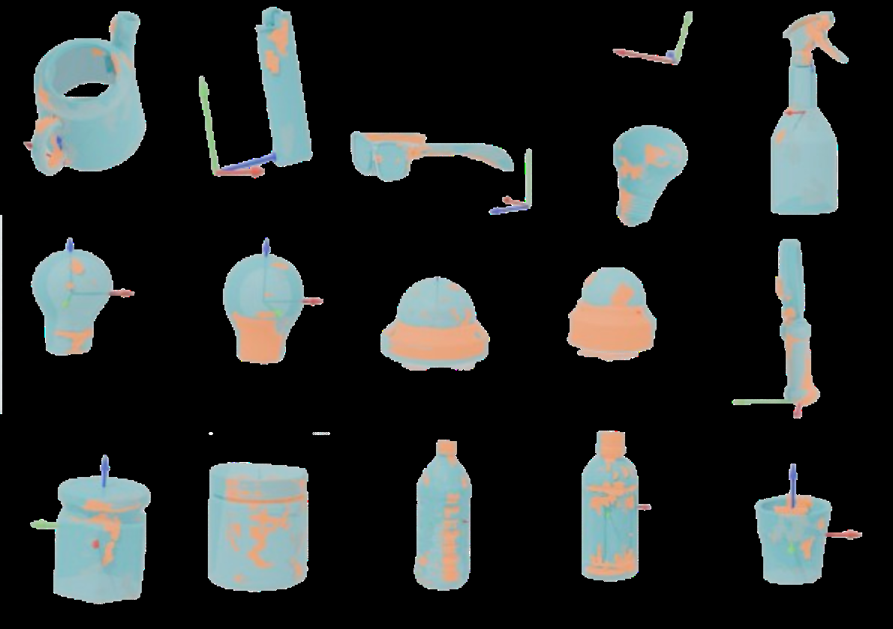
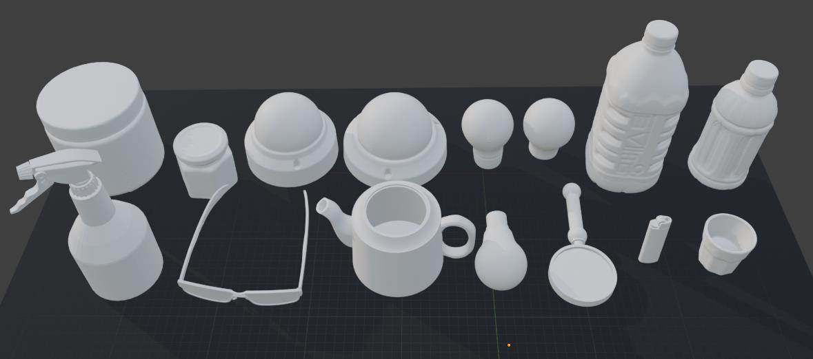
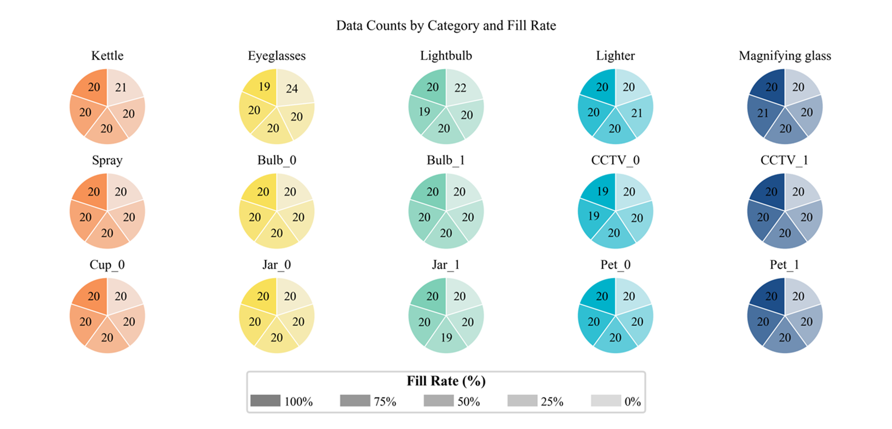
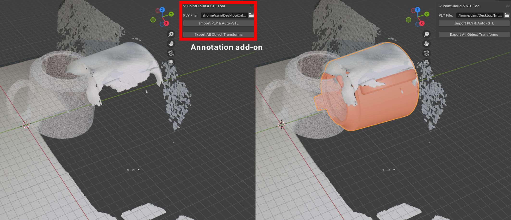
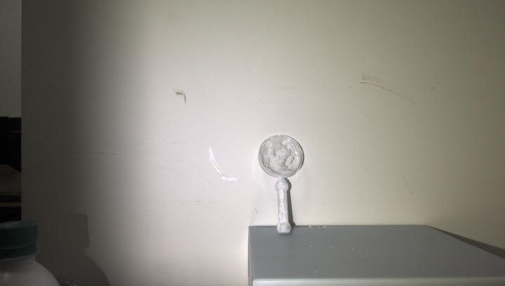
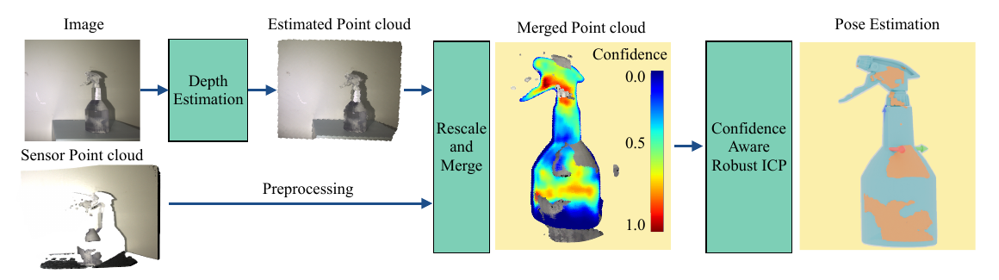
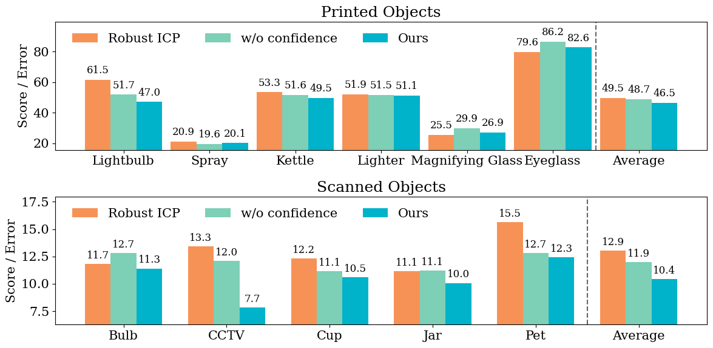

we propose VIUGIC, a Vision- and Uncertainty-Guided ICP framework that integrates shape recovery from large-scale depth estimation models with a confidence-aware registration stage.
Transparent objects pose persistent challenges for robotic perception due to refraction, specular reflection, and unreliable depth sensing, all of which degrade geometry reconstruction and pose estimation. Existing datasets seldom account for the transparency variations caused by fill state or mixed materials, limiting generalization to the diverse appearances found in real environments.
To address this, we introduce the HCTD dataset, a controlled transparent-object dataset that systematically varies transparency through material and fill-state conditions. Building on this resource, we propose VIUGIC, a Vision- and Uncertainty-Guided ICP framework that integrates shape recovery from large-scale depth estimation models with a confidence-aware registration stage. VIUGIC leverages dense geometry and per-point uncertainty provided by these models, incorporating the uncertainty into a weighted ICP objective that down-weights unreliable predictions near refractive boundaries and missing-depth regions. Experiments across multiple objects and transparency levels demonstrate that combining controlled data with uncertainty-guided registration substantially improves the stability and accuracy of transparent-object pose estimation.
Figures extracted from the paper show the capture setup, object categories, fill-rate distribution, and annotation workflow.






VIUGIC first recovers dense object geometry from RGB observations using a large-scale depth estimation model. The recovered geometry is then registered to object models through a confidence-weighted ICP objective that reduces the influence of unreliable depth near transparent boundaries and missing regions.

Capture transparent objects under controlled material and fill-state variations.
Recover dense geometry and per-point uncertainty from a large-scale depth model.
Register object models while down-weighting uncertain refractive and missing-depth regions.

| Method | Overall |
|---|---|
| Ours | 46.58 |
| w/o Confidence ICP | 48.78 |
| Robust-ICP | 49.62 |
| ICP | 52.37 |
| Method | Overall |
|---|---|
| Ours | 10.46 |
| w/o Confidence ICP | 12.02 |
| Robust-ICP | 13.02 |
| ICP | 14.28 |
We would like to thank Hyungtae Lim for providing valuable feedback, base models, and implementation guidance for point cloud registration experiments.
@article{anonymous2026viugic,
title = {Pose Estimation of Transparent Objects via Depth Completion and Confidence-Guided Registration},
author = {Anonymous Authors},
year = {2026}
}